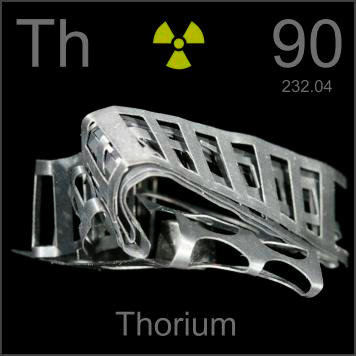

HOME
PREVIOUS
NEXT

Thorium
Atomic Weight: 232.0377
Density: 11.724 g/cm3
Melting Point: 1750 °C
Boiling Point: 4820 °C
This foil is what remained after useful shapes were stamped out, but what those shapes were useful for remains a mystery to me. Pure thorium metal like this is quite rare, and not easily obtained.